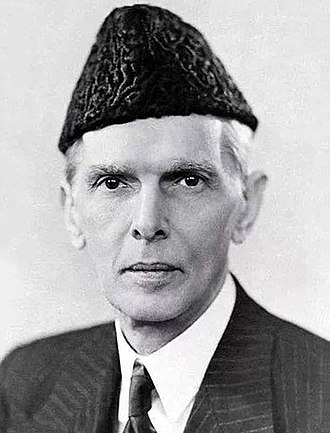

Quaid-I-Azam Muhammad Ali
1876-1945
Founder of Pakistan
Muhammad Ali Jinnah[a] (born Mahomedali Jinnahbhai; 25 December 1876 – 11 September 1948) was a barrister, politician and the founder of Pakistan.[1] Jinnah served as the leader of the All-India Muslim League from 1913 until the inception of Pakistan on 14 August 1947, and then as the Dominion of Pakistan's first governor-general until his death. He is revered in Pakistan as the Quaid-e-Azam ("Great Leader") and Baba-e-Qaum ("Father of the Nation"). His birthday is observed as a national holiday in Pakistan.
Biography
- Qasim Abdallah Moini (20 December 2003). "Remembering the Quaid". Dawn.
- A. Guttman (15 October 2007). The Nation of India in Contemporary Indian Literature.
- Walsh, Judith E. (2017). A Brief History of India.
- Ahmed, Khaled (24 December 2010). "Was Jinnah a Shia or a Sunni?".
- Ahmed, p. 4: "Although born into a Khoja (from khwaja or 'noble') family who were disciples of the Ismaili Aga Khan
- Desai, Anjali (2007). India Guide Gujarat.